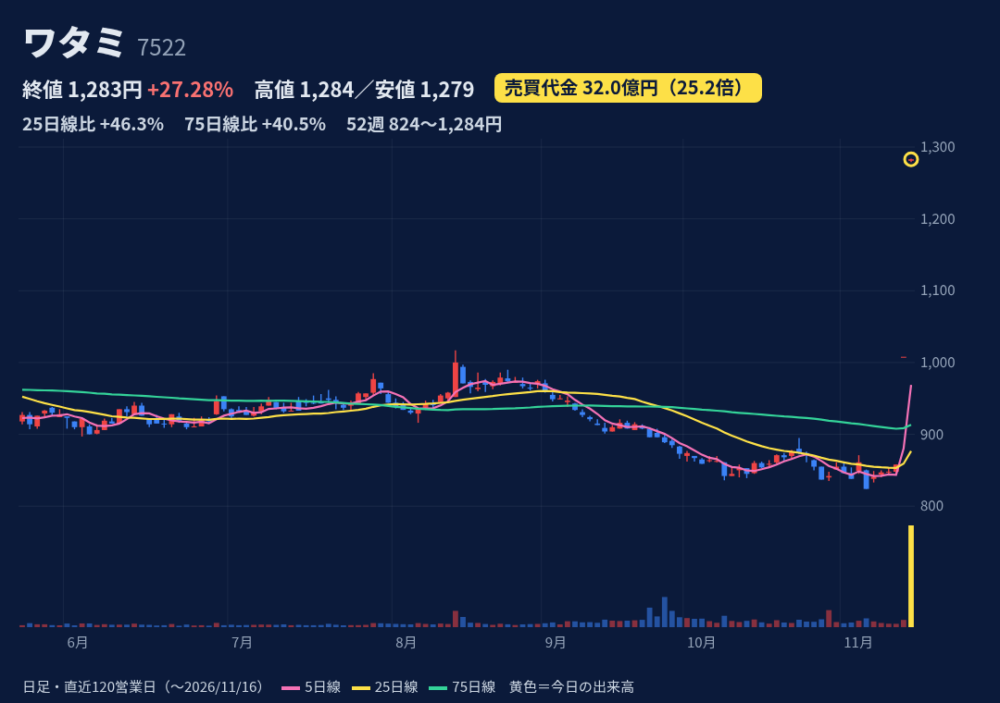
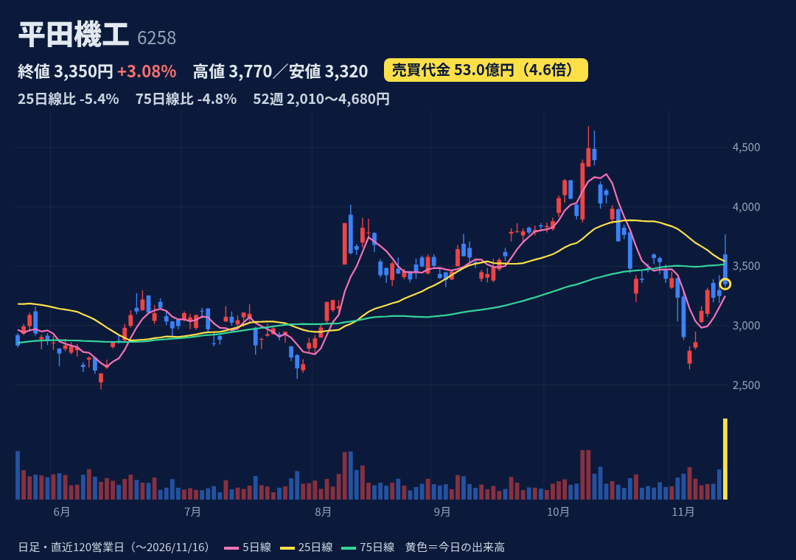
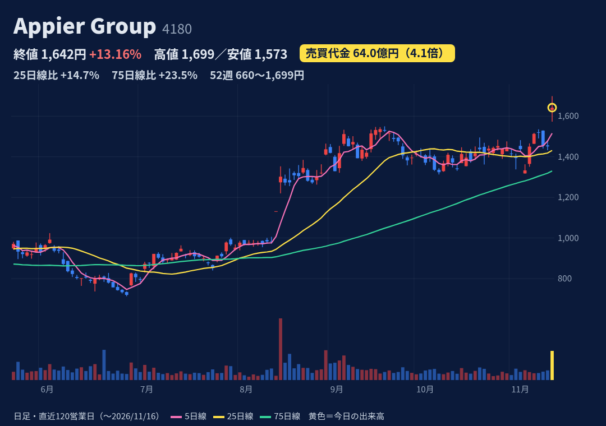
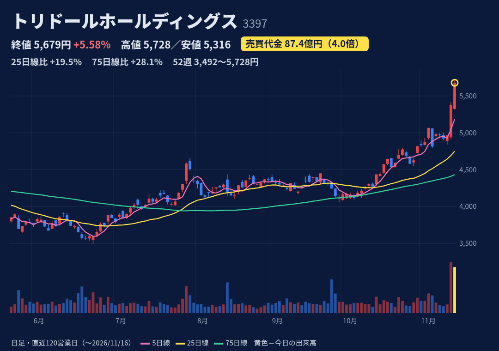
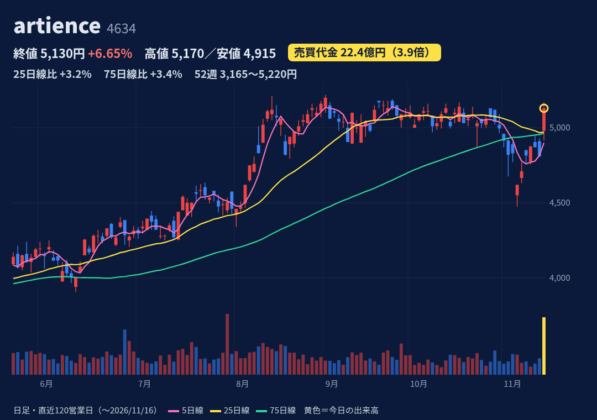
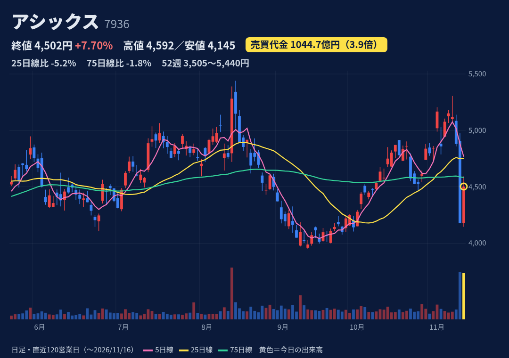

居酒屋（和民・ミライザカ等）、宅食「ワタミの宅食」、海外・サブウェイ等の外食事業。
11/13 20:00開示：渡邉会長が代表のWisdomによるMBO。TOB1,284円（11/12終値比+49.65%）、期間11/16〜12/28、下限28.78%。賛同・応募推奨、上場廃止予定。11/13は日経報道でS高。
27/3期上期：売上492.7億円（+10.2%）、営業益20.6億円（-3.9%）、純益15.8億円（-8.1%）。配当予想は無配に修正・株主優待廃止。上場廃止予定のため次回決算は実質無関係。
11/16 始1,281 高1,284 安1,279 終1,283（+27.28%）でTOB価格1,284円に張り付き。11/13にS高（+17.5%）。52週高値=今日、25日線比+46%。急騰前の売買代金は1億円前後。
株探11/13時点：買残322,900株・売残15,700株・信用倍率20.57倍。JPXの日々公表・増担保規制の一覧に掲載なし（11/16確認）。11/13から監理銘柄（確認中）指定。
上場廃止前提のMBO。TOB不成立（下限未達）なら株価がTOB価格を大きく下回る可能性。無配・優待廃止済み。上値はTOB価格1,284円で実質頭打ち。

自動車・半導体・家電などの生産ライン／搬送装置の設計製造。半導体ウエハー搬送装置が伸長。
11/13 15:30開示：上期決算と通期上方修正（営業益90→109億円、純益65→80億円、期末配当75→95円）、自社株買い（上限320万株=10.44%・100億円、11/16〜27/3/31）。生成AI関連で半導体向け受注が伸長。
27/3期上期：売上497.5億円（+9.0%）、営業益71.8億円（+48.9%）。通期営業益109億円（+31.1%）に修正、上期進捗約66%。7-9月期の経常益は+0.6%と伸び鈍化。次回決算日は未確認。
11/16 始3,600 高3,770 終3,350（+3.08%）の大陰線・上ヒゲ420円。25日・75日線の約5%下。52週高安4,680/2,010円の中間。8/10・10/9の急騰後は10日で-10%・-22%。代金3倍超は約1年で6回。
株探11/13時点：買残860,600株（前日比+約9万）・売残59,200株・信用倍率14.54倍と買い長。JPXの日々公表・増担保規制の一覧に掲載なし（11/16確認）。
決算翌日に寄り天の陰線。信用買残が積み上がっており戻り売り圧力。半導体関連の受注動向に業績が左右される。過去の急騰後に失速した前例が複数。

台湾発のAIマーケティングSaaS。広告・顧客データ活用のAIを企業向けに提供。
11/13 15:30開示：3Q決算と2四半期連続の上方修正。営業益50.3→58.5億円（+96.7%）、純益41.2→49.9億円、配当2.3→2.5円。売上543.8億円は据え置き。粗利率61.3%で過去最高。
1-9月：売上388.1億円（+25.0%）、営業益37.6億円（+97.3%）、純益33億円（+98.7%）。7-9月の営業益21億円は会社予想15〜17億円を上回った（フィスコ）。修正後通期営業益への進捗約64%。次回決算日は未確認。
11/16 始1,631 高1,699 安1,573 終1,642（+13.16%）、実体小さく上下ヒゲ約57円。52週高値1,699円を更新（安値660円＝2/24）。25日線+15%・75日線+24%。2026年は+7%超の急伸が12回と多い。
株探11/13時点：買残1,197,500株（11/11の941,300株から増加）・売残80,400株・信用倍率14.89倍。JPXの日々公表・増担保規制の一覧に掲載なし（11/16確認）。
PER約34倍と成長期待が織り込まれている。信用買残が急増中。売上計画は据え置きで、利益の上振れは粗利率改善頼み。値動きが大きい銘柄。

「丸亀製麺」を中心に国内外で飲食チェーンを展開。海外事業の比重が拡大。
11/13 13:00開示の上期決算（事業利益123.6億円・+4.9%、通期計画220億円に進捗56.2%、海外が大幅増益）で同日+8.3%。11/16は続伸だが当日の新たな開示・報道は確認できず。
27/3期上期：売上1,452.2億円（+2.4%）、事業利益123.6億円（+4.9%）、純益62.3億円（+4.5%）。7-9月の純益は前年比2倍。通期（純益70億円）は据え置き。丸亀製麺は人件費増で減益。次回決算日は未確認。
11/16 始5,326 高5,728 安5,316 終5,679（+5.58%）、高値引けに近い陽線。52週高値5,728円（今日）＝上場来高値更新（株探）。25日線+20%・75日線+28%。11/13にも売買代金90億円・+8.3%。
株探11/13時点：売残180,600株（前日138,000株から増）・買残70,400株・信用倍率0.39倍の売り長。JPXの日々公表・増担保規制の一覧に掲載なし（11/16確認）。
PER約71倍と割高感。通期計画は据え置きで、下期は前年赤字からの回復想定。2日で約14%上昇し短期の過熱感。丸亀製麺の人件費増。

旧東洋インキSCホールディングス。印刷インキ・色材・粘接着剤・電池材料などの化学メーカー。
11/13 15:30開示：筆頭株主TOPPAN HDの保有株全部（22.28%）を自己株TOBで取得（価格4,383円=10%ディスカウント、買付予定1,050万株、11/16〜12/14）、900万株消却。あわせて営業益230→260億円に上方修正。
1-9月：売上2,905億円（+12.4%）、営業益203.6億円（+36.8%）。通期営業益260億円（+25%）・経常275億円に修正、純益は減損（ハンガリー電池材料・トルコ）で210→190億円に下方修正。次回決算日は未確認。
11/16 始4,980 高5,170 安4,915 終5,130（+6.65%）、陽線で上ヒゲ小さめ。52週高値5,220円（9/1）まであと約2%。25日線・75日線をともに約3%上回る。売買代金3倍超の急増は約1年で1回と珍しい。
株探11/13時点：買残28,200株・売残8,400株・信用倍率3.36倍で信用残は少ない。JPXの日々公表・増担保規制の一覧に掲載なし（11/16確認）。
自己株TOB価格4,383円は時価より大幅に低く、株価の下支えにはならない。TOB資金（試算約460億円）で財務は縮む。中東情勢・原料高、欧州電池材料の計画見直し。

ランニングシューズ等のスポーツ用品と「オニツカタイガー」を世界展開。
11/13 13:00の3Q決算（営業益+37.5%）と中計2029発表後に出尽くし感でS安（4,180円）。11/16は「過剰反応」との見方から急反発（みんかぶ）。11/16当日の新たな開示は確認できず。
1-9月：売上8,051億円（+28.8%）、営業益1,755億円（+37.5%）。通期営業益1,950億円は据え置き、進捗約90%。7-9月の営業利益率は20.9%→20.3%に低下。中計2029：売上1.5兆円、ROE50%、還元総額約4,000億円。
11/16 始4,181 高4,592 終4,502（+7.70%）の陽線。11/12終値4,880円に届かず。25日線-5.2%・75日線-1.8%。52週高安5,440/3,505円の中間。8/14の+10.8%後は10日で-13%。
株探11/13時点：買残2,017,200株（11/12の1,060,000株からほぼ倍増）・売残489,700株・信用倍率4.12倍。JPXの日々公表・増担保規制の一覧に掲載なし（11/16確認）。
S安で信用買残が急増し、戻り局面での売り圧力。7-9月は利益率低下。PBR約9倍と高評価。大型株で指数・為替（前提1ドル160円）の影響大。
株価・出来高・信用残：取引所データ。材料：各社開示・各社報道。